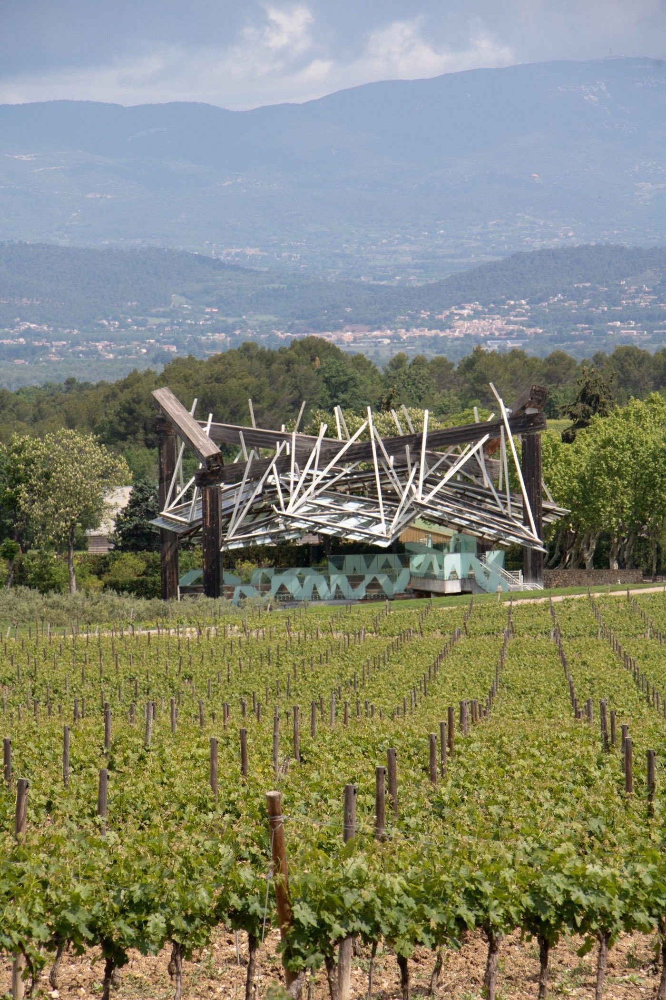
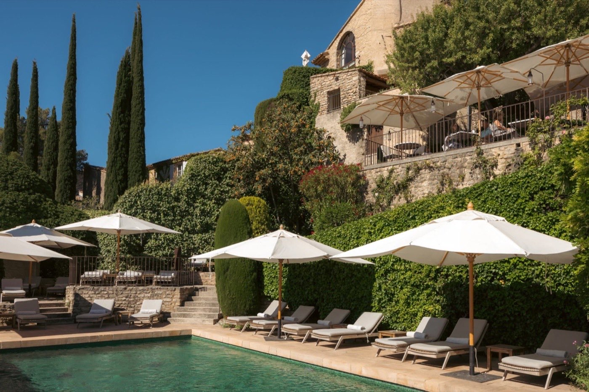
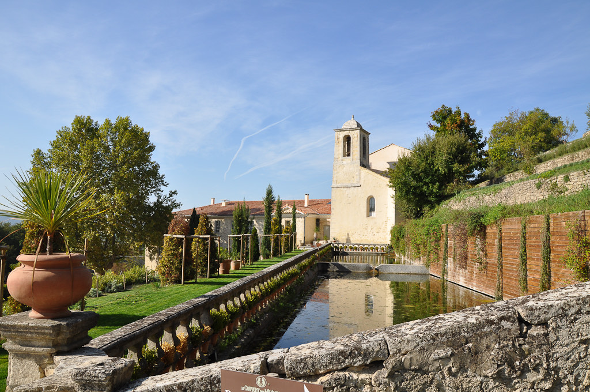
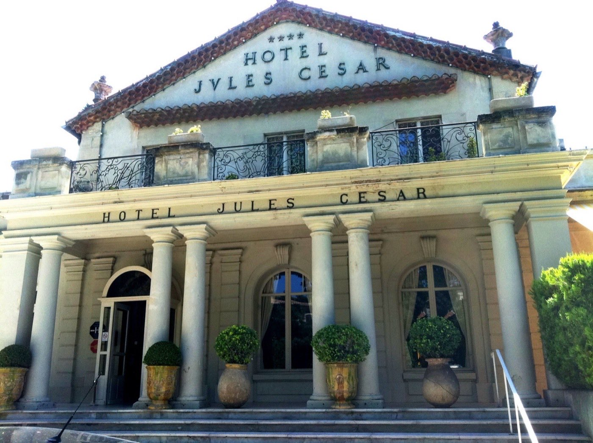
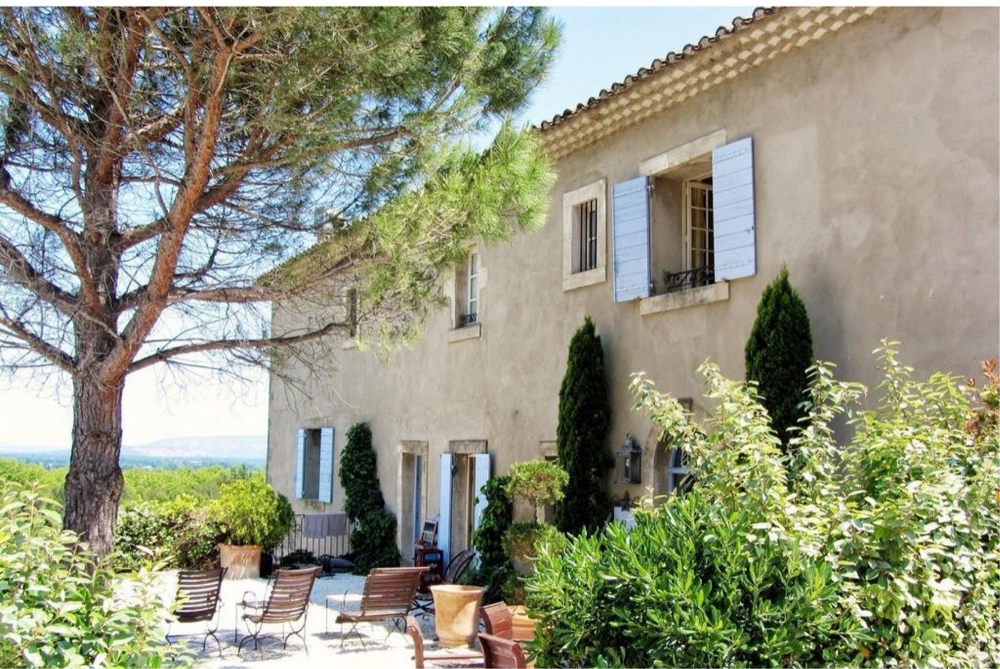

Hôtels de charme en Provence : 12 maisons d'exception testées
Mas du XVIIe, bastides aristocratiques, couvents reconvertis : la Provence
concentre les adresses les plus désirables de France. Douze sortent du lot, avec, pour
chacune, son score, son bémol, et l'indice qui sépare celles qui font la Provence
de celles qui se contentent de la décorer.
Par Swann Bertaud, rédacteur✺Publié le 21 juillet 2026✺19 min de lecture
Baumanière, aux Baux-de-Provence : cinq bâtisses du XVIe au XVIIIe siècle
au pied du Val d'Enfer. Photo : site officiel.
TL;DR : l'essentielLe podium provençal 2026
Baumanière (Les Baux-de-Provence), 9,4/10 :
80 ans d'histoire familiale, un restaurant 3 étoiles Michelin, potager bio et
céramiste en résidence. Seul 5/5 à l'indice provençal avec le Mas de Peint.
Airelles La Bastide de Gordes (Luberon), 8,8/10 :
bastide du XVIe sur remparts du XIIe, 33 M€ de restauration, vue Luberon.
Villa La Coste (Le Puy-Sainte-Réparade), 8,7/10 :
200 hectares de vignoble AOC Palette, Ando et Gehry dans les rangs de vigne.
La surprise : le Mas de Peint en Camargue
(7,8/10), 9e au score global, mais 5/5 à l'indice
provençal, à égalité avec notre n°1 et loin devant des adresses trois fois plus chères.
Un mas de 1602 jamais refait, une manade toujours active, dès 290 €/nuit.
L'Indice provençal LMHS va de 2,5/5 (Villa Gallici, La Mirande,
Hôtel de l'Image) à 5/5 (Baumanière, Mas de Peint), et il ne suit pas
la hiérarchie des prix.
La grille LMHS Destination et l'indice provençal
Ce palmarès applique la grille LMHS Destination, la déclinaison du Protocole LMHS réservée à nos classements par ville ou par région. Elle note sur 10 et pondère cinq critères : rapport qualité-prix (25 %), un critère thématique qui s'adapte à l'objet du classement (25 %, ici le charme architectural et l'ancrage provençal), la localisation (20 %), le service (20 %) et les avis clients vérifiés (10 %). C'est la même grille que celle de nos hôtels de charme sur la Côte d'Azur et de notre palmarès de Saint-Tropez.
Nous y ajoutons ici une donnée propriétaire inédite : l'Indice provençal LMHS, noté sur 5. Il mesure l'ancrage territorial réel, et rien d'autre : produits locaux réellement servis, architecture authentique (et non reconstituée), artisans résidents, vignoble propre, jardin potager actif, matériaux locaux dans la construction ou la rénovation. Un hôtel de luxe générique posé en Provence ne peut pas dépasser 2/5. Un vrai mas provençal peut atteindre 5/5. C'est le critère qui ne ment pas, et celui qui redistribue les cartes.
Pourquoi Baumanière passe devant Airelles Gordes ici, et pas au national
Cinq de ces adresses figurent aussi à notre palmarès national des 50 meilleurs hôtels & spas de France, où elles sont évaluées sur 20 par le Protocole LMHS classique, quatre piliers égaux : Luxe, Mise en scène, Hospitalité, Soin. Les deux notes ne sont pas interchangeables, et l'ordre change :
Hôtel
Rang national
Protocole LMHS /20
Grille Destination /10
Écart de rang
Airelles Gordes
06e
17,6/20
8,8/10
1er → 2e
Baumanière
09e
17,0/20
9,4/10
2e → 1er
Le Couvent des Minimes
20e
15,5/20
8,1/10
3e → 6e
Villa Gallici
28e
14,6/20
8,0/10
4e → 7e
L'inversion en tête n'est pas une erreur : elle est le résultat direct du critère thématique. Sur les quatre piliers du Protocole national, Airelles Gordes l'emporte sur le Luxe et la Mise en scène : c'est un palace, avec les moyens d'un palace. Sur la grille Destination, où l'ancrage provençal pèse 25 %, Baumanière (5/5 à l'indice provençal) creuse un écart que la bastide de Gordes (3,5/5, ni vignoble ni potager propres) ne rattrape pas. Le palace est meilleur. Le mas est plus provençal. Les deux affirmations sont vraies en même temps.
Deux absents de ce palmarès méritent un mot, car ils figurent au national dans la même région : Terre Blanche (18,1/20, 4e national) et Coquillade Provence (15,9/20). Ce sont d'excellents resorts, golf, 3 000 m² de spa pour le premier, mais ce sont des resorts, pas des hôtels de charme. Le critère d'entrée de ce classement est la maison, pas l'équipement.
Le tableau : scores, prix et indice provençal
Rang
Hôtel
Zone
Score LMHS
Indice provençal
Basse saison
Haute saison
01
Baumanière
Alpilles
9,4/10
5/5
325 €
1 102 €
02
Airelles Gordes
Luberon
8,8/10
3,5/5
790 €
4 028 €
03
Villa La Coste
Aix
8,7/10
4/5
609 €
2 869 €
04
Domaine de Fontenille
Luberon
8,6/10
4,5/5
240 €
778 €
05
Crillon le Brave
Ventoux
8,2/10
3,5/5
370 €
1 238 €
06
Le Couvent des Minimes
Forcalquier
8,1/10
3/5
472 €
1 514 €
07
Villa Gallici
Aix
8,0/10
2,5/5
450 €
1 850 €
08
La Mirande
Avignon
7,9/10
2,5/5
395 €
925 €
09
Le Mas de Peint
Camargue
7,8/10
5/5
290 €
473 €
10
Hôtel Jules César
Arles
7,5/10
3/5
120 €
408 €
11
La Maison Bournissac
Saint-Rémy
7,3/10
3,5/5
175 €
375 €
12
Hôtel de l'Image fermé
Saint-Rémy
7,1/10
2,5/5
189 €*
196 €*
Prix indicatifs chambre d'entrée de gamme par nuit, taxes non incluses.
Indice provençal LMHS = ancrage territorial réel sur 5 (produits locaux, architecture authentique,
artisans résidents, vignoble, potager, matériaux locaux).
*Hôtel de l'Image : tarifs historiques relevés avant sa fermeture pour rénovation.
Sources : sites officiels, Booking.com, TripAdvisor, relevés en juillet 2026.
Notre sélection : les 12 meilleurs hôtels de charme de Provence
01
Baumanière, Les Baux-de-Provence 9,4/10
Pour qui : gastronomes, amateurs de Provence authentique, couples en quête d'une adresse qui dure.
Au pied du Val d'Enfer, dans le Parc naturel régional des Alpilles. Cinq bâtisses du XVIe au XVIIIe siècle, L'Oustau (ferme du XVIe), Le Manoir (XVIIIe), La Guigou nichée parmi les oliviers. Pierre provençale brute, poutres exposées, tomettes : pas de reconstitution, tout est d'origine ou restauré à l'identique. L'odeur de la garrigue entre par les fenêtres et la lumière des Alpilles, blanche, presque minérale, frappe le calcaire à toute heure. Les meubles sont chinés dans la région, les tableaux viennent de la collection privée de la famille Charial. Quatre-vingts ans d'histoire familiale depuis 1945, un restaurant 3 étoiles Michelin, L'Oustau avec Glenn Viel, et la table gastronomique La Cabro d'Or avec Michel Hulin, potager bio actif, céramiste Cécile Cayrol en résidence, cours d'œnologie sur le domaine. L'ancrage provençal n'est pas une posture marketing, c'est la colonne vertébrale de la maison. Également 9e de notre palmarès national avec 17,0/20.
Le bémol LMHS : la signalisation pour trouver l'entrée est franchement mauvaise. Quelques chambres des bâtisses secondaires manquent de lumière naturelle. Et le rapport qualité-prix des extras (apéritif en cave à 180 €/2 personnes) peut surprendre même les habitués du luxe.
Les Baux-de-Provence · Dès 325 €/nuit en basse saison · Jusqu'à 1 102 € en haute saison ·
Petit-déjeuner 35 € · Indice provençal 5/5 ·
Site officiel →
02
Airelles La Bastide de Gordes 8,8/10
Pour qui : amateurs de patrimoine, couples luxe, voyageurs qui veulent le Luberon sans compromis.
Bastide seigneuriale du XVIe siècle accrochée à la falaise calcaire, surplombant l'un des plus beaux villages de France. Pierre massive posée sur des remparts du XIIe, restaurée en 2014-2015 pour 33 millions d'euros par Christophe Tollemer : poutres bois, voûtes, tomettes terra-cotta, cheminées en pierre. L'esprit d'une bastide aristocratique du XVIIIe, sans la moindre fausse note. La vue sur le Luberon depuis les terrasses est proprement irréelle, le matin, le village est encore dans la brume. Les tissus Pierre Frey et la toile de Jouy donnent aux chambres une chaleur que les palaces contemporains n'arrivent pas à reproduire. Collection privée de tableaux, trois piscines extérieures sur 20 hectares de jardins. 6e de notre palmarès national avec 17,6/20, le meilleur score provençal sur la grille /20.
Le bémol LMHS : c'est un palace Airelles, donc une marque de luxe posée sur une bastide provençale, pas l'inverse. L'indice provençal souffre de l'absence de potager et de vignoble propres. Les prix en haute saison (jusqu'à 4 028 €/nuit, le plus élevé du palmarès) avec un petit-déjeuner non inclus à 60 € divisent sur la valeur perçue.
Gordes · Dès 790 €/nuit en basse saison · De 1 764 € à 4 028 € en haute saison ·
Indice provençal 3,5/5 ·
Site officiel →
03

Villa La Coste, Le Puy-Sainte-Réparade 8,7/10
Pour qui : amateurs d'art contemporain, œnophiles, voyageurs qui veulent la Provence sans nostalgie.
Entre Aix-en-Provence et le Luberon, au cœur d'un domaine viticole de 200 hectares planté en AOC Palette. L'architecture est contemporaine et signée : Tadao Ando, Jean Nouvel, Frank Gehry pour les pavillons d'art dispersés dans le vignoble. Les 28 suites et villas en pierre locale s'intègrent dans le paysage sans le dominer. L'odeur du vignoble en été, les sculptures monumentales au détour des allées (Calder, Bourgeois, Koons), la lumière rasante du soir sur les rangées de vigne : c'est l'hôtel de charme provençal qui assume le plus franchement son identité contemporaine. Vignoble propre en production, restaurant Hélène Darroze sur place, spa intégré au domaine. Note TripAdvisor exceptionnelle : 4,9/5 sur 149 avis.
Le bémol LMHS : l'architecture contemporaine, aussi réussie soit-elle, rompt avec la tradition du mas provençal. Pour qui cherche l'authenticité des matériaux anciens et des volumes hérités, ce n'est pas l'adresse. Le prix reste élevé pour une expérience qui demeure très « art hotel ».
Le Puy-Sainte-Réparade · Dès 609 €/nuit en basse saison · Jusqu'à 2 869 € en haute saison ·
Indice provençal 4/5 ·
Site officiel →
04
Domaine de Fontenille, Lauris 8,6/10
Pour qui : amateurs de bastide provençale authentique, œnophiles, couples qui veulent le Luberon sans la foule.
Bastide du XVIIe siècle sur un promontoire dominant la vallée de la Durance, avec vue sur le Luberon. Maison de maître classique provençale, fondations de 1638, restaurée en 2013-2014 par l'architecte Alexandre Lafourcade. Platanes bicentenaires, bassins, jardins à la française, volets gris-bleu, pierre ocre. Rien n'a été « refait à neuf », tout a été conservé. Le silence du Luberon, le craquement des parquets anciens, l'odeur de la lavande qui monte du potager. Domaine viticole depuis 1638 (vignoble propre), restaurant gastronomique Champ des Lunes (1 étoile Michelin), jardin potager actif qui alimente la cuisine. C'est l'adresse qui obtient le meilleur rapport indice provençal / prix de tout le palmarès : 4,5/5 pour un tarif d'entrée de 240 €, contre 790 € pour une bastide notée 3,5/5 à Gordes.
Le bémol LMHS : seulement 21 chambres, les disponibilités en haute saison sont rares et il faut réserver plusieurs mois à l'avance. Le spa est modeste comparé aux autres adresses de ce niveau.
Lauris · Dès 240 €/nuit en basse saison · De 416 € à 778 € en haute saison ·
Indice provençal 4,5/5 ·
Site officiel →
05

Crillon le Brave 8,2/10
Pour qui : cyclistes (le Ventoux est à portée de roue), couples romantiques, amateurs de village provençal authentique.
Village perché à 363 mètres dans les contreforts du Mont Ventoux, à 30 minutes de Carpentras. Douze maisons en pierre des XVIIe-XVIIIe siècles reliées par des ruelles pavées, des ponts et des galeries, rénovation signée Charles Zana et Margaux Perrin, modernité discrète dans des volumes anciens. Le village est l'hôtel : on circule de chambre en chambre à travers des ruelles privées, sans lobby ni couloir. La lumière du Ventoux, plus froide et plus nordique que celle des Alpilles, donne aux pierres une teinte dorée en fin de journée. Restaurant à base de produits locaux, vue sur le Géant de Provence depuis presque toutes les chambres, spa de qualité. TripAdvisor : 4,6/5 sur 952 avis.
Le bémol LMHS : l'hôtel a été racheté et repositionné en 5 étoiles en 2024, la montée en gamme tarifaire n'a pas été suivie d'une montée en gamme équivalente sur certains détails de service. Les avis récents déconseillent les chambres 5 et 6.
Crillon-le-Brave · Dès 370 €/nuit en basse saison · Jusqu'à 1 238 € en haute saison (suite) ·
Indice provençal 3,5/5 ·
Site officiel →
06

Le Couvent des Minimes, Mane 8,1/10
Pour qui : amateurs de bien-être et de spa, couples en quête de sérénité, voyageurs sensibles à l'architecture patrimoniale.
Couvent du XVIIe siècle, fondé en 1613, dans la campagne de Forcalquier entre Luberon et Lure. Réhabilitation majeure par De Planta Architectes, ouverte en 2023 après trois ans de travaux : la chapelle, le cloître et la tour de l'église sont préservés, l'extension moderne est en pierre locale et chêne provençal. Le silence monastique persiste. Les 49 chambres sentent la lavande et le bois de chêne, et la lumière filtre par les fenêtres à meneaux du cloître comme elle le faisait il y a quatre siècles. Spa L'Occitane de 2 500 m², premier spa au monde certifié ECOCERT « Établissement de Bien-Être Durable », avec piscine de 25 m, hammam et 10 cabines de soins. C'est le meilleur spa du palmarès en équipements, et la conversion architecturale est exemplaire. 20e de notre palmarès national avec 15,5/20.
Le bémol LMHS : le partenariat avec L'Occitane est omniprésent, ce qui peut sembler commercial dans un lieu de cette nature. Des avis récents signalent un accueil « robotisé » et un refus de flexibilité sur le check-out. Le restaurant est nettement en deçà du niveau du spa.
Mane · Dès 472 €/nuit en basse saison · Jusqu'à 1 514 € en haute saison (La Baptistine, 90 m²) ·
Indice provençal 3/5 ·
Site officiel →
07
Villa Gallici, Aix-en-Provence 8,0/10
Pour qui : amateurs de décoration baroque, couples en week-end à Aix, voyageurs qui veulent l'élégance sans l'isolement.
Bastide du XVIIIe siècle sur les hauteurs d'Aix, à dix minutes à pied du cours Mirabeau. L'architecture évoque un palazzo toscan plutôt qu'une bastide provençale classique : jardins à la florentine avec cyprès, fontaines et buis taillés, intérieurs Baroque et Rococo, damas, velours, dorures, meubles Louis XV, ciels de lit. Atmosphère de boudoir opulent. Le parfum du jasmin dans le jardin, la fraîcheur des pierres épaisses en plein été, la lumière chaude des abat-jour dans des chambres aux tons jaune et rose. C'est l'hôtel le plus « intérieur » de la sélection : on ne vient pas pour la vue, mais pour l'enveloppe. Restaurant gastronomique du chef Christophe Gavot, piscine dans le jardin florentin, Relais & Châteaux. 28e de notre palmarès national avec 14,6/20.
Le bémol LMHS : l'identité florentine prend le dessus sur l'identité provençale, l'indice provençal en souffre mécaniquement. Certains voyageurs trouvent la décoration excessive, voire étouffante. Le spa est petit pour un 5 étoiles Relais & Châteaux.
Aix-en-Provence · Dès 450 €/nuit en basse saison · Jusqu'à 1 850 € en haute saison (villa avec piscine privée) ·
Indice provençal 2,5/5 ·
Site officiel →
08
La Mirande, Avignon 7,9/10
Pour qui : amateurs d'histoire, festivaliers, couples qui veulent la Provence sans voiture.
Palais du XIVe siècle adossé au Palais des Papes, dans l'intra-muros historique. Hôtel particulier devenu demeure privée au XVIIIe, puis hôtel de luxe dans les années 1990, décoration intérieure signée Martin Stein : tapisseries, boiseries, tissus d'époque, mobilier ancien, chaque chambre unique. La proximité du Palais des Papes est physique : on entend les cloches, on voit les remparts depuis les fenêtres, et les couloirs sentent la cire et le vieux bois. C'est l'hôtel le plus « habité » de la sélection, dans le bon sens du terme. Restaurant gastronomique 1 étoile Michelin, cours de cuisine dans les cuisines historiques, et une offre « Qui dîne dort » (nuit + dîner trois temps dès 718 €/2 personnes) qui est une vraie bonne affaire. Localisation notée 4,9/5 sur TripAdvisor.
Le bémol LMHS : Avignon n'est pas la Provence rurale, l'indice provençal souffre de l'environnement urbain. Certaines chambres sont petites pour le prix demandé, et le rapport qualité-prix est jugé moyen par une partie des voyageurs (4,1/5 sur ce critère TripAdvisor).
Avignon · Dès 395 €/nuit en basse saison · Jusqu'à 925 € en haute saison ·
Indice provençal 2,5/5 ·
Site officiel →
09
Le Mas de Peint, Le Sambuc 7,8/10
Pour qui : amateurs de nature sauvage, cavaliers, voyageurs qui veulent la Provence sans les touristes.
Mas construit en 1602, en Camargue, sur 550 hectares de rizières, de chevaux et de taureaux noirs. Architecture camarguaise traditionnelle : façades en pierre non enduite des carrières locales, sols en grès, poutres exposées, lierre sur les murs. Converti en hôtel en 1994 par Lucille Bon (architecte) et Jacques Bon (manadier), avec des matériaux et des artisans exclusivement locaux. Le silence de la Camargue, les flamants roses visibles depuis la terrasse, l'odeur des roseaux et de la vase en été : c'est l'hôtel le plus dépaysant de la sélection, une Provence que peu de voyageurs connaissent. La manade est toujours en activité, le restaurant gastronomique propose un menu déjeuner à 59 €, et les 15 chambres et suites sont toutes différentes. Neuvième au score global, mais 5/5 à l'indice provençal, à égalité avec Baumanière et devant toutes les adresses du Luberon.
Le bémol LMHS : l'isolement est une force et une contrainte, sans voiture, l'adresse est inaccessible. La piscine est petite. Et quinze chambres seulement, ce qui rend les disponibilités très rares en haute saison.
Le Sambuc, Arles · Dès 290 €/nuit en basse saison · De 332 € à 473 € en haute saison ·
Indice provençal 5/5 ·
Site officiel →
10

Hôtel Jules César, Arles 7,5/10
Pour qui : amateurs de design et d'histoire, voyageurs qui visitent Arles pour les Rencontres de la Photographie ou les Arènes.
Couvent des Carmélites de 1664, au cœur du centre historique, à 200 mètres du Théâtre Antique. Converti en hôtel en 1928, rénové en 2014 par Christian Lacroix, enfant d'Arles, et l'architecte Olivier Sabran. Le cloître de 1664 est préservé ; la décoration est une explosion colorée inspirée d'Arles, de la Camargue et de la tauromachie : jaune safran, rouge taureau, bleu Camargue. Théâtrale, assumée, unique. Les 52 chambres sont toutes différentes, chacune racontant un aspect de la culture arlésienne, et le cloître est baigné de lumière le matin. Le design de Lacroix est une œuvre en soi, Hemingway et Picasso ont dormi ici. Piscine extérieure chauffée, vraie surprise dans un couvent du XVIIe. C'est aussi le tarif d'entrée le plus bas du palmarès, à 120 €.
Le bémol LMHS : c'est un hôtel MGallery (Accor), et la chaîne se sent dans certains process de service. Des avis récents signalent des incohérences, check-in tardif, linge apporté à 19 h. Le rapport qualité-prix d'un 5 étoiles est contesté : certaines chambres sont trop petites pour le tarif demandé.
Arles · Dès 120 €/nuit en basse saison · De 173 € à 408 € en haute saison ·
Indice provençal 3/5 ·
Site officiel →
11

La Maison Domaine de Bournissac 7,3/10
Pour qui : gastronomes, voyageurs qui veulent combiner Avignon et Saint-Rémy sans se ruiner.
À Paluds de Noves, à cinq minutes de Saint-Rémy-de-Provence et quinze d'Avignon. Mas provençal traditionnel, architecture sobre et authentique, piscine extérieure chauffée dans un jardin planté d'oliviers et de lavande. La triple vue depuis la terrasse, Luberon, Alpilles et Mont Ventoux, est l'une des plus belles de Provence, dans le silence d'une campagne restée à l'écart des villages perchés saturés. La vraie raison de venir reste le restaurant gastronomique du chef Christian Peyre, étoilé Michelin depuis 2018, avec des chambres dès 175 €/nuit : le meilleur rapport cuisine étoilée / prix du palmarès.
Le bémol LMHS : l'hôtel est clairement secondaire par rapport au restaurant, les chambres sont agréables mais pas exceptionnelles pour le standing affiché. La fermeture hivernale (novembre à fin mars) limite les séjours, et le restaurant impose une réservation 24 h à l'avance.
Paluds de Noves · Dès 175 €/nuit en basse saison · Jusqu'à 375 € en haute saison (suite) ·
Ouvert d'avril à fin octobre · Indice provençal 3,5/5 ·
Site officiel →
12
Hôtel de l'Image, Saint-Rémy-de-Provence 7,1/10
Pour qui : voyageurs qui veulent Saint-Rémy sans se ruiner, familles, cyclistes.
Boulevard Victor Hugo, à 100 mètres du centre-ville. Hôtel de charme de taille humaine, architecture provençale sobre, piscine extérieure et jardin planté. L'ambiance est celle d'un boutique-hôtel, pas d'un palace, et Saint-Rémy est l'une des villes les plus agréables de Provence : marchés, galeries, restaurants, et le point de départ idéal pour explorer les Alpilles à vélo.
Le bémol LMHS : l'hôtel est fermé pour rénovation jusqu'au 31 décembre 2026, aucune réservation n'est possible actuellement. Nous le maintenons dans la sélection pour sa réouverture annoncée début 2027, mais son standing avant fermeture était celui d'un bon hôtel de charme, pas d'un luxe comparable aux autres adresses de ce palmarès. Nous réévaluerons son score à la réouverture.
Saint-Rémy-de-Provence · Tarifs historiques avant fermeture : dès 189 €/nuit en basse saison, dès 196 € en haute saison ·
Indice provençal 2,5/5 ·
Site officiel →
Le mot de SwannLe Luberon est surcoté, les Alpilles sont sous-estimées
Je le dis clairement : le Luberon a été tellement médiatisé depuis Peter Mayle que certaines adresses vivent sur leur réputation géographique plus que sur leur qualité réelle. Gordes est magnifique, mais la bastide Airelles y est aussi chère qu'un palace parisien sans en avoir tous les services. Le Domaine de Fontenille, à Lauris, moins connu, offre un ancrage provençal supérieur pour un tarif d'entrée plus de trois fois moins élevé. Les Alpilles, elles, ont Baumanière, et Baumanière suffit à justifier le détour. Quatre-vingts ans de la même famille, un restaurant 3 étoiles Michelin, un potager bio, une céramiste en résidence. C'est ça, un hôtel de charme en Provence. Pas un palace de chaîne posé sur une colline avec vue sur la lavande. Si vous n'avez qu'un séjour à faire, faites-le aux Alpilles. Et si vous avez le budget, faites-le à Baumanière.
Swann Bertaud, rédacteur hôtellerie de luxe
La Provence par zone : où séjourner selon votre style
Le Luberon : villages perchés et bastides
Le Luberon concentre les adresses les plus médiatisées : Gordes, Bonnieux, Lourmarin. Pour un hôtel de luxe de référence, Airelles La Bastide de Gordes (8,8/10) reste incontournable malgré ses prix. Pour un meilleur rapport ancrage/prix, le Domaine de Fontenille à Lauris (8,6/10, indice provençal 4,5/5, dès 240 €) est notre recommandation. Le Luberon est aussi la zone la plus encombrée en juillet-août : préférez mai-juin ou septembre.
Les Alpilles : gastronomie et paysages minéraux
C'est la Provence la plus minérale : Les Baux-de-Provence, Saint-Rémy, Les Antiques. Baumanière (9,4/10) domine la zone sans partage, notre numéro 1 toutes catégories. La Maison Domaine de Bournissac (7,3/10, dès 175 €) offre la triple vue Luberon-Alpilles-Ventoux pour l'un des meilleurs rapports table étoilée / prix de la région. Crillon le Brave (8,2/10), aux portes du Ventoux, est techniquement hors des Alpilles mais partage le même esprit de village perché.
Aix-en-Provence et ses environs
Aix est la ville la plus cosmopolite de Provence. Villa Gallici (8,0/10, Relais & Châteaux, style florentin) est l'adresse de référence pour un séjour urbain de luxe. Villa La Coste (8,7/10), à vingt minutes au nord, est l'alternative contemporaine avec vignoble et sculptures monumentales. Pour les amateurs d'art, Villa La Coste est clairement supérieure.
Avignon, Arles et la Camargue
Trois villes, trois univers. La Mirande (7,9/10) à Avignon est l'adresse du Festival, en juillet, et des amateurs de patrimoine médiéval. À Arles, Le Jules César (7,5/10) est le choix design et Le Mas de Peint (7,8/10, à 30 minutes au Sambuc) le choix nature, de loin l'adresse la plus authentique de cette zone, et l'une des deux seules 5/5 du palmarès. Pour dormir en Provence sans voiture, Avignon et Arles sont les seules options de ce classement.
FAQ : hôtels de charme en Provence
Quel est le meilleur hôtel de charme en Provence en 2026 ?
Selon la grille LMHS Destination, Baumanière aux Baux-de-Provence obtient le score le plus élevé (9,4/10) grâce à son ancrage provençal exceptionnel : potager bio, artisans résidents, 80 ans d'histoire familiale et un restaurant 3 étoiles Michelin. C'est l'un des deux seuls établissements du palmarès à obtenir 5/5 à l'indice provençal, avec le Mas de Peint. À noter : sur la grille /20 de notre palmarès national, qui pondère différemment, Airelles Gordes (17,6/20) devance Baumanière (17,0/20).
Quelle est la différence entre un mas et une bastide en Provence ?
Le mas est une ferme provençale traditionnelle, souvent en pierre non enduite, liée à l'agriculture ou à l'élevage, Le Mas de Peint, construit en 1602 sur une manade toujours active, en est l'exemple parfait. La bastide est une maison de maître de campagne, plus noble, généralement du XVIIe ou XVIIIe siècle, avec jardins à la française : le Domaine de Fontenille (1638) et Airelles La Bastide de Gordes en relèvent. Les deux typologies sont représentées dans notre sélection, et l'indice provençal ne favorise ni l'une ni l'autre, Baumanière (bâtisses de ferme) et le Mas de Peint obtiennent tous deux 5/5.
Où dormir en Provence pour un week-end romantique ?
Trois adresses se détachent. La Mirande à Avignon (7,9/10), palais du XIVe siècle face au Palais des Papes, avec son offre « Qui dîne dort » dès 718 €/2 personnes. Crillon le Brave (8,2/10, dès 370 €), village perché entier transformé en hôtel, avec vue sur le Mont Ventoux. Et le Domaine de Fontenille à Lauris (8,6/10, dès 240 €), bastide du Luberon avec vignoble propre et table étoilée, le meilleur rapport charme/prix des trois.
Quel hôtel de charme choisir dans le Luberon ?
Nous distinguons trois niveaux. Airelles La Bastide de Gordes pour le palace absolu (8,8/10, dès 790 €/nuit, jusqu'à 4 028 € en haute saison). Domaine de Fontenille à Lauris pour l'ancrage viticole authentique (8,6/10, indice provençal 4,5/5, dès 240 €/nuit), notre meilleur rapport ancrage/prix. Crillon le Brave pour le rapport charme/prix en village perché (8,2/10, dès 370 €/nuit). Si l'authenticité prime sur le service de palace, Fontenille est le choix évident.
Quelle est la meilleure saison pour séjourner dans un hôtel de charme en Provence ?
Mai-juin et septembre sont les mois idéaux : lavande en fleur de mi-juin à mi-juillet dans le Luberon, chaleur supportable, foules bien moins denses qu'en août. Les prix baissent de 30 à 50 % en basse saison (novembre-mars), mais certains établissements ferment partiellement, La Maison Bournissac de novembre à fin mars, et l'Hôtel de l'Image est fermé pour rénovation jusqu'au 31 décembre 2026. Les écarts saisonniers sont considérables : Airelles Gordes passe de 790 € à 4 028 €, quand le Mas de Peint ne bouge que de 290 € à 473 €.
Méthode et sources
12 établissements retenus sur les centaines que compte la Provence. Grille LMHS Destination, notée sur 10 : rapport qualité-prix (25 %), charme architectural et ancrage provençal (25 %), localisation (20 %), service (20 %), avis clients vérifiés (10 %). L'indice provençal LMHS, noté sur 5, est calculé séparément sur six marqueurs vérifiables : produits locaux servis, architecture authentique non reconstituée, artisans résidents, vignoble propre, potager actif, matériaux locaux en construction ou rénovation. Aucun partenariat commercial, aucune affiliation. Tarifs relevés en juillet 2026 sur les sites officiels, Booking.com et TripAdvisor, chambre d'entrée de gamme, taxes non incluses. Photographies : sites officiels (Baumanière, Airelles Gordes, Crillon le Brave, Bournissac) et Wikimedia Commons (Couvent des Minimes : Alpes de Haute-Provence, CC BY 2.0 ; Jules César : panoramio, CC BY 3.0 ; Château La Coste : Jfvole, CC BY-SA 4.0).